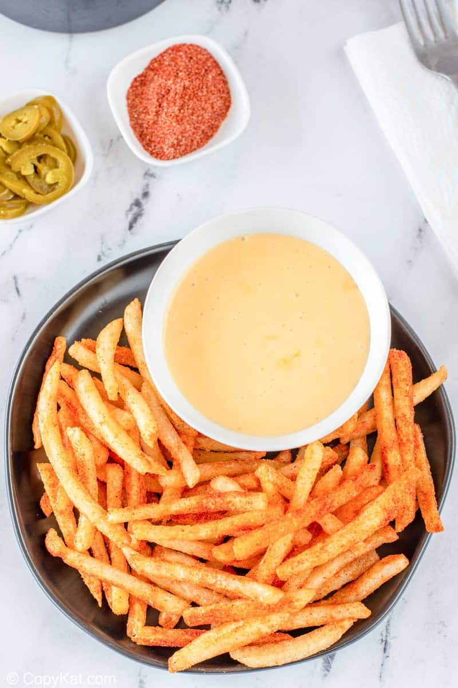

Taco Bell Nacho Fries
Taco Bell Nacho Fries are deliciously seasoned with Mexican spices and served with creamy cheese sauce. So if you love the crispy texture of the fries, bold seasoning, and warm nacho cheese sauce, you must make this copycat recipe.

Ingredients
Taco Bell Nacho Cheese
- 1 tablespoon salted butter
- 1/2 cup whole milk
- 8 ounces American cheese
- 1 tablespoon Tobasco Jalapeno sauce or juice from a jar of jalapeno slices for nachos
French Fry Seasoning
- 2 teaspoons paprika
- 2 teaspoons salt
- 1 teaspoon chili powder like McCormick's
- 1 teaspoon garlic powder do not use garlic salt
- 1 teaspoon onion powder do not use onion salt
French Fries
- 1 pound Frozen Fast Food Fries
- vegetable oil for frying
Instructions
Seasoning blend instructions
- If you have a spice grinder or a mini food processor, process spices to grind them more finely, if not, skip this step. Store spice blend in a salt shaker or another shaker. You will have some left over, you can use this for tacos, or another batch of fries.
Taco Bell Nacho Cheese Sauce
- Combine all ingredients in a small pot, heat on low until the cheese melts, stir to combine.
French Fries Instructions
- Fill a large pot with enough vegetable oil to fill the pot 4 inches deep. Heat the oil to 350 degrees.
- Cook the fries for 6 to 8 minutes or until crispy. Remove fries from the oil and place on a wire rack that is resting on a baking sheet, and sprinkle liberally with the seasoning blend.
How to assemble and serve
- Place some of the fries onto an individual serving plate, and then serve with a small bowl of cheese sauce.